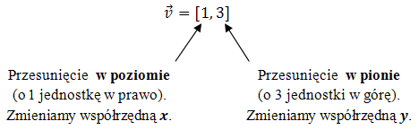
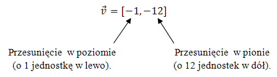
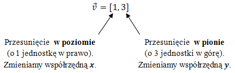
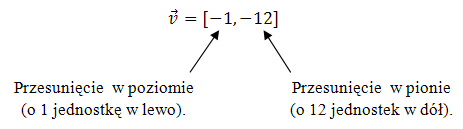
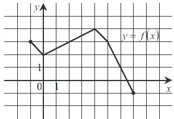
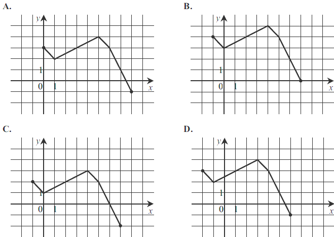
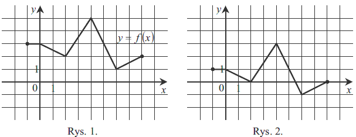
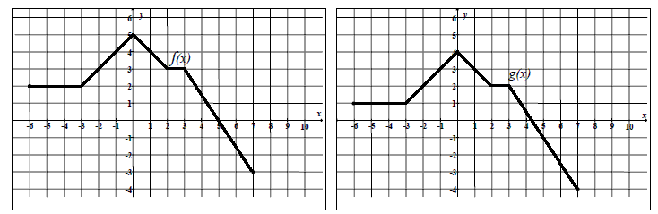

Przesunięcia wykresów funkcji
Wykres dowolnej funkcji możemy przesuwać w
poziomie oraz w pionie.
Wartości o jakie przesuwamy wykres w każdym z tych dwóch kierunków, najłatwiej jest zapisywać w postaci wektora przesunięcia:
 Jeżeli chcemy przesunąć wykres w lewo, albo w dół, to na współrzędnych wektora podamy liczby ujemne, np.: 
Wartości o jakie przesuwamy wykres w każdym z tych dwóch kierunków, najłatwiej jest zapisywać w postaci wektora przesunięcia:
 Jeżeli chcemy przesunąć wykres w lewo, albo w dół, to na współrzędnych wektora podamy liczby ujemne, np.: 
- Wektor \(\vec{v}=[5,0]\) oznacza przesunięcie o \(5\) jednostek w prawo.
- Wektor \(\vec{v}=[-7,0]\) oznacza przesunięcie o \(7\) jednostek w lewo.
- Wektor \(\vec{v}=[0,6]\) oznacza przesunięcie o \(6\) jednostek w górę.
- Wektor \(\vec{v}=[0,-6]\) oznacza przesunięcie o \(6\) jednostek w dół.
- Wektor \(\vec{v}=[9,12]\) oznacza przesunięcie o \(9\) jednostek w prawo i \(12\) jednostek do góry.
- Wektor \(\vec{v}=[-2,3]\) oznacza przesunięcie o \(2\) jednostki w lewo i \(3\) jednostki do góry.
- Wektor \(\vec{v}=[-3,-4]\) oznacza przesunięcie o \(3\) jednostki w lewo i \(4\) jednostki do dołu.
- Wektor \(\vec{v}=[1,-2]\) oznacza przesunięcie o \(1\) jednostkę w prawo i \(2\) jednostki do dołu.
Jak zmienia się wzór funkcji po przesunięciu o wektor?
Gdy przesuwamy wykres funkcji o wektor \(\vec{v}=[p,q]\), to:- we wzorze funkcji zamieniamy każdego \(x\) na wyrażenie \((x - p)\),
- do całego wzoru funkcji dodajemy liczbę \(q\).
Zapisz wzór funkcji \(g(x)\), która powstaje przez przesunięcie funkcji \(f(x) =
5x^2 - 3x - 2\) o wektor \(\vec{v} = [7, 6]\).
Gdy przesuniemy wykres funkcji \(f(x)=2x-3\) o \(2\)
jednostki w prawo i \(4\) jednostki w górę, to otrzymamy wykres funkcji opisanej wzorem
A.\( y=2(x-2)+4 \)
B.\( y=2(x-2)-4 \)
C.\( y=2(x-2)+1 \)
D.\( y=2(x+2)+4 \)
C
Na rysunku 1 przedstawiony jest wykres funkcji \(y=f(x)\)
określonej dla \(x\in [-7, 4]\).  Rysunek 2 przedstawia wykres funkcji
Rysunek 2 przedstawia wykres funkcji
Rysunek 2 przedstawia wykres funkcji A.\( y=f(x+2) \)
B.\( y=f(x)-2 \)
C.\( y=f(x-2) \)
D.\( y=f(x)+2 \)
C
Rysunek przedstawia wykres funkcji \(y = f(x)\).  Wskaż rysunek na którym jest
przedstawiony wykres funkcji \(y = f(x + 1)\). 
D
Na rysunku 1. jest przedstawiony wykres funkcji \(y=f(x)\) 
Funkcja przedstawiona na rysunku 2. określona jest wzorem
A.\( y=f(x)+2 \)
B.\( y=f(x)-2 \)
C.\( y=f(x-2) \)
D.\( y=f(x+2) \)
B
Funkcję \(f(x)=7x-5\) przesunięto o wektor \(\vec{v} = [0; -3]\) otrzymując funkcję \(g(x)\). Funkcja \(g(x)\)
określona jest wzorem
A.\( g(x)=7x-8 \)
B.\( g(x)=7x-2 \)
C.\( g(x)=7x-26 \)
D.\( g(x)=7x+19 \)
A
Funkcję \(f(x)=7x-5\) przesunięto o wektor \(\vec{v}=[5; 1]\) otrzymując funkcję \(g(x)\). Funkcja \(g(x)\) określona
jest wzorem
A.\( g(x)=7x-1 \)
B.\( g(x)=7x+1 \)
C.\( g(x)=7x-39 \)
D.\( g(x)=7x-41 \)
C
Funkcja \(g\) jest określona wzorem 
A.\( g(x)=f(x-1) \)
B.\( g(x)=f(x)-1 \)
C.\( g(x)=f(x+1) \)
D.\( g(x)=f(x)+1 \)
B
Wierzchołek paraboli będącej wykresem funkcji kwadratowej \(y = f (x)\) ma
współrzędne \((2, 2)\). Wówczas wierzchołek paraboli będącej wykresem funkcji \(g(x) = f(x + 2)\) ma
współrzędne
A.\( (4,2) \)
B.\( (0,2) \)
C.\( (2,0) \)
D.\( (2,4) \)
B